{kind=link}
{kind=link}
{kind=link}
{kind=link}
{kind=link}
{kind=link}
{kind=link}
{kind=link}
{kind=link}
{kind=link}
{kind=link}
{kind=link}
{kind=link}


Fujimi 1/48 Messerschmitt Bf 110 C/D Zerst�rer/ Dackelbauch
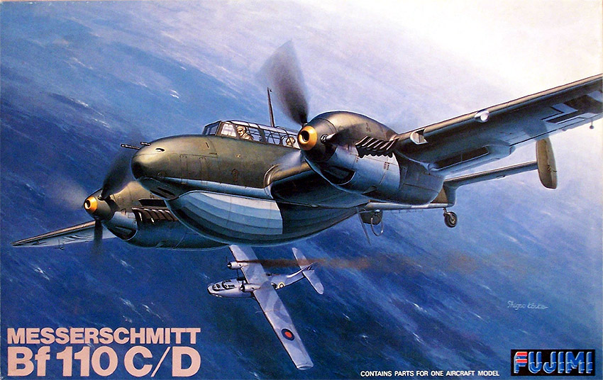
Kit #31002
MSRP $17.00
Images and text Copyright � 2005 by Matt Swan
Developmental Background
Designed to a 1934 requirement for a long range escort fighter, the first prototype Bf 110 made its initial flight on May 12,1936. It was an aircraft of very mixed fortunes. It has often been criticized for its failure during the Battle of Britain, while its successes in other fields have been largely ignored. It was brilliant in Poland against a weaker air force and succeeded in destroying some of the British bombers attacking the North Sea coast of Germany in 1940. The Bf 110C was the most common version of the Bf 110 during the Battle of France and the fateful Battle of England. The aircraft received a disastrous mauling at the hands of the R.A.F. during the "Battle of Britain". Rather than protecting the bombers under escort, the Bf 110C formations usually found that they were hard pressed to defend themselves.
Professor Willy Messerschmitt began design studies towards the end of 1934 at the Bayerische Flugzeugwerke at Augsburg. A key factor in the design was the use of two Daimler-Benz DB 600 engines; subsequent difficulty in obtaining enough of these to power development aircraft meant that the Bf 110 could not be tested during the Spanish Civil War. Nevertheless, one aircraft was tested at the Rechlin evaluation center in 1937 and proved to be very fast, although not as maneuverable as hoped. Despite obvious shortcomings, the Bf 110 entered service in 1939 as the Bf 110C, powered by two 1100 hp DB 601A engines. Production was set up on a massive scale, and by the end of the year some 500 Bf 110s were flying operationally. During the invasion of Norway and Denmark it was decided that although the Bf 110C had more range and endurance than a single-engined fighter, this was still inadequate to be able to escort convoys. To increase the range and endurance, Messerschmitt fitted a ventral auxiliary fuel tank with a capacity of 317 US gal. This tank was fitted under the fuselage, which gave the �Zerst�rer� a very distinctive profile, increased drag and reduced maneuverability. The tank prompted the nickname "Dackelbauch", or Dachshund belly. The tank itself could be jettisoned, but (because of aerodynamic issues) more than once refused to drop. Also a number of aircraft were lost due to the fact that insufficiently vented tanks could accumulate a very volatile mix of fuel and air.
Both the C- and D-models had almost disappeared from the European theatre by the summer of 1941, although they were being used extensively on the Russian front and in the Middle East. Production during 1940 had risen to 1,083 machines, but with the impending introduction of the Me 210 only 784 machines were produced in the following year. Although the Bf 110s had failed in this primary task, production continued at a high rate; by 1945 no fewer than 6,150 had been built, ranging from Bf 110As to Gs. As later models became available, the early Bf 110Cs and Ds were transferred to the Middle East and Eastern Front. The 110 also soldered on within the confines of German controlled airspace as a general workhorse, advanced trainer and liaison transport.
The Kit
This is an inexpensive kit and you get quite a bit of plastic for your money. Released in 1977 this kit was actually well ahead of its time. Inside the box we have four large poly bags containing six trees of high pressure injection molded pieces done in light gray plastic. The parts are packed in such a manner as to reduce shipping damage from abrasion as much as possible. Examining the main wing and fuselage pieces we see very fine, crisp panel lines and rivet detail. Something that would have been exceptional during the days of raised panel lines and is very comparable to model kits produced today. The panel lines are so fine that I am slightly concerned about them disappearing under the paint. The wing panels have some slight warpage to them but it seems to pull out easily when they are held together. The fuselage pieces fit together very well and the joining of the wing to fuselage is clean and looks to require no putty. Wingspan, cord and fuselage profile compare favorable to Bf-110 drawings but the engine nacelles look to be just slightly narrow. If you were not holding the model in front of a line drawing of the aircraft I doubt you would notice this aspect. Fabric detail on the ailerons, rudder and elevators looks good and not overdone.
Nowhere on any of the pieces do I find evidence of injector pin markings or sink holes. In a few isolated areas there is some light flash. I cannot find any noticeable mold separation lines on any of the detail parts either. The cockpit is only fairly detailed, probably was great for its day but could use some PE or resin to come into the Twenty-first Century. The kit includes some bombs, standard drop tanks, oversized drop tanks and the D belly tank. All control surfaces are molded in place and the instrument panels are void of detail relying on decals to replicate the instruments. The instructions clearly show two options for the nose section but only one is included with the kit.
The single tree of clear parts gives us options to build this with the front canopy open or closed. There is a landing light lens included but no wingtip lenses or reflective gun sight. For total parts count we have 7 clear parts and 123 gray pieces totaling 130 pieces in the box.
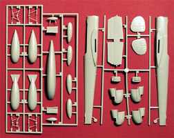
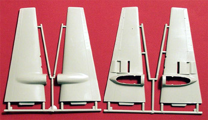
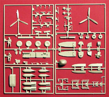
You may click on the above images to view larger pictures
Decals and Instructions
The kit comes with two set of instructions, the first and primary set is focused on the D version aircraft. This unfolds into a single large sheet. One side contains a good historical background of the aircraft in English and Japanese.
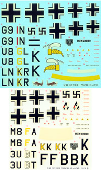
Following this are painting and marking instructions for two D model 110s, a paint code chart that looks to be listing the paints by Gunze Aqueous colors numbers and by name. Also we have a parts map on this page. The flip side covers the basic construction process in eight exploded views. There are a few color call-outs scattered around here along with some instructions to drill holes for various modifications. The second set of instructions is a half size sheet covering the C variations with two replacement construction steps for the primary sheet and painting and marking instructions for three C models.
As with the instructions, we get two sets of decals with the model. One set for the D options and one set for the C options. The small image of the decals at right can be clicked on to view a full-size scan. The decals show good print registry, the color density looks good and the artwork appears crisp and clean. We get a couple of interesting pieces of nose art along with a good selection of service stencils. Regardless of which aircraft you model, you will end up with plenty of spare decals for the extras box.
Conclusions
For the price tag on this kit I feel it is well worth the money. You get a model that is basically well engineered with a good starting level of detail. The parts fit together well with little need for filler. The surface detail is so fine as possibly to present a problem when painting so care will be required to ensure paints are properly thinned. The lack of the second nose cone is disappointing but not critical. Instructions appear easy to follow and decals are more than adequate.
There are more aftermarket detail packages and decals out there than I care to mention here, many of them aimed specifically at the C and D models. Most of them can be adapted to this kit. I feel the most critical would be an Eduard PE set for the cockpit, a replacement Squadron canopy so it can be modeled open and maybe some replacement wheels. All in all it�s a very nice kit that looks to present few construction problems and allows you to build one of five different aircraft.
Construction
3/9/05
I built the Pro Modeler Bf-110G a few years ago and wanted to see how this kit would stack up against it. I wanted to build this a little different though, not the standard Luftwaffe 70/71 type of scheme. After quite a bit of looking around I came across a few pictures of some provisional 110Cs shipped to Italy. There is some debate on the exact coloration of the aircraft but I liked the Medium Green/Sand over black interpretation and there were enough Italian decals in the spares box to make the concept work. There were three or possibly four of these aircraft and documentation is very sketchy which means I can have some creative leeway � just what I like.
This is a conventional style kit and construction is just as conventional beginning with the fuselage interior. Those crappy crew figures have to go first thing. Looking through the spares box I found two very nice Luftwaffe crew figures that might have actually come from the Pro Modeler 110 kit. With a little slicing and dicing their positioning was adjusted to fit the confines of the Fujimi cockpit then they were painted based on images I looked at from the movie �Battle of Britain�. I plan on building this in flight with the gear up so I will not be spending a lot of time with extra detail work inside the cockpit. If I were to do another for shelf display I would have to convert an aftermarket cockpit set for it. Since this is an early model 110 the interior colors are based around RLM 02 gray/green.
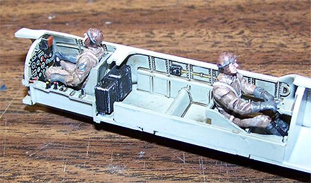 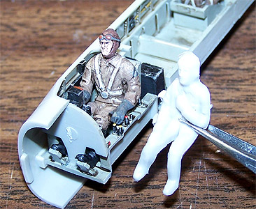
The instrument panels have no molded details but rely on the black and white decals for all effects. I used the kit decal, which was very brittle but added some color with a fine tip paintbrush around some of the dials. The fuselage went together well with just a minor lip along the bottom seam that needed a little putty. The nose cone had a slight misalignment that created another lip that needed to be sanded off. The tail plane joint was another area for a dab of putty. This is all set aside to allow the glue to harden and I address the wings.
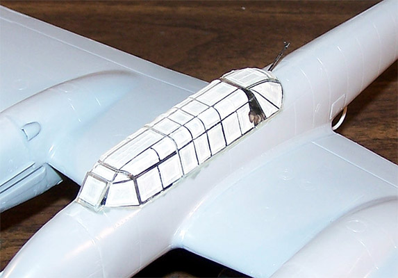
The gear doors need some work in order to be closed, the hinge pieces have to be cut off and the edges beveled to fit to the nacelle in the closed position. None of the interior gear bay pieces were used. The wing radiators were painted and installed, the mounting holes for the drop tanks were drilled out then the wing panels were glued together. These pieces fit very well and needed only minor cleanup work at the seams. Engine nacelle nosepieces were assembled and fit to the wings, again with a good fit and no putty needed. The fit of the wings to the fuselage was nearly perfect and no putty was required.
Other than a few details like mass balancers and pitot tube the basic construction is done already. I stuffed the radiator openings with some damp tissue then went to work masking the canopy. I spent about three days with basic construction and yet another three days just masking that freaking canopy. Before gluing the canopy in place I cut a small rectangle of clear plastic card and glued it onto the gunsight as the reflective piece. This is something that is missing from the kit but not difficult to scratch build. Okay, all the little do-dads are in place under the wings including the mounting racks for the drop tanks. I�ll glue the tanks on after the paint is done. Here are a few shots of the model before she heads to the paint room for some primer.
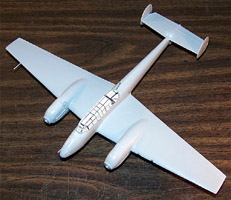
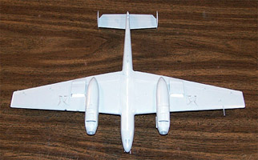
You may click on the smaller images to view larger pictures
I am very concerned about having the panel lines disappear under layers of paint as they are so fine. To try to protect them as much as possible I will thin my paints quite a bit. Staring with my primer I am using Model Master medium gray cut slightly better than 50% with lacquer thinner and apply a light, uniform coat. Once this dries I inspect for problems, do a little light sanding and blow off with compressed air. The underside of the model was done with Testors flat black again cut by nearly 50% with lacquer thinner. Two light coats were applied and allowed to dry. Moving to the topside I thinned out some Model Master enamel medium green, reduced my air pressure to about 8-psi and coated the top surfaces.
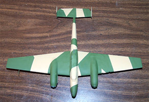
Overnight drying time was allowed and the masks were placed. Masking is done with strips of 3M masking tape. Model Master sand was thinned out and sprayed over the medium green. This was all done at the lower 8-psi air pressure to reduce over spray. The small image to the left is how she looks at this point in time. You can click on that to see a larger picture.
All this is allowed to cure overnight then a coat of Future thinned 50% with isopropyl alcohol is applied. After a few hours of dry time I start placing decals. Other than the instrument panel decals and the fuel octane decals from the kit sheet all other decals came from my spares box. All decals were set with Micro-Sol setting solution and allowed to dry overnight before being sealed with another coat of thinned Future. I am still concerned about the panel lines. I plan on using my standard sludge wash but to help pop out the lines a little better I am try out a post shading idea. With Tamiya X-19 Smoke thinned out and boosted with a few drops of flow aid I trace each panel line with a light coat. Let this dry then sludge wash and seal with Polly Scale clear flat. Some more X-19 is applied in a heavier coat for the engine exhaust stains and enhanced with some ground pastel chalks rubbed overtop using a cotton swab. The masks are removed from the canopy, the aerials are put in place and the landing light lens is placed in the wing. The kit does not include clear pieces for the marker lights so these are painted and coated with clear gloss. The propellers are attached followed by the drop tanks. These are a bit of a pain getting mounted properly but finally fit in place and the model is complete.
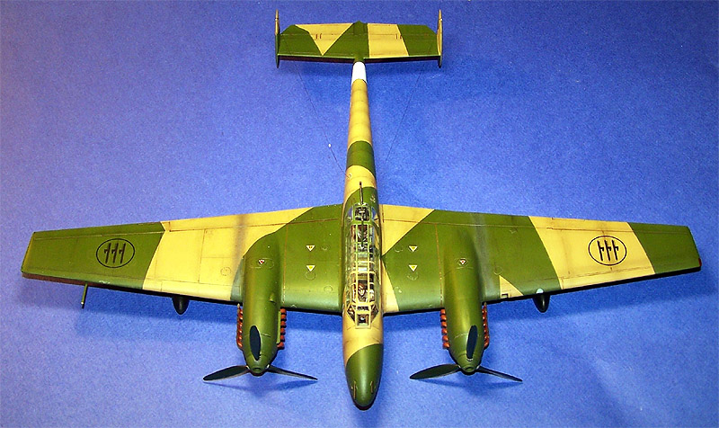
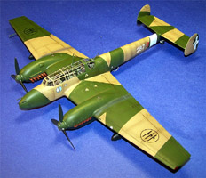
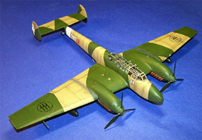
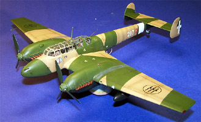
You may click on these small images to view larger pictures
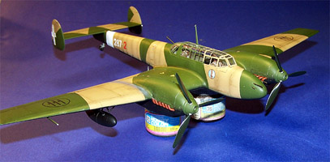
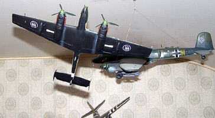
Overall it�s a real nice kit and was a pleasure to build. Like I said before if you are building this for shelf display you may want to do some advanced work on the interior and no matter what � get rid of those figures.